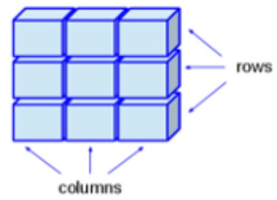
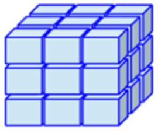
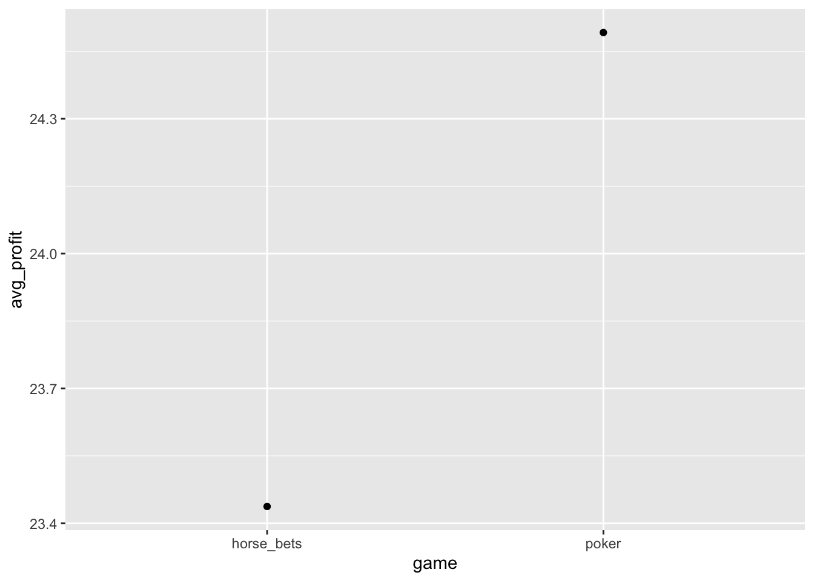
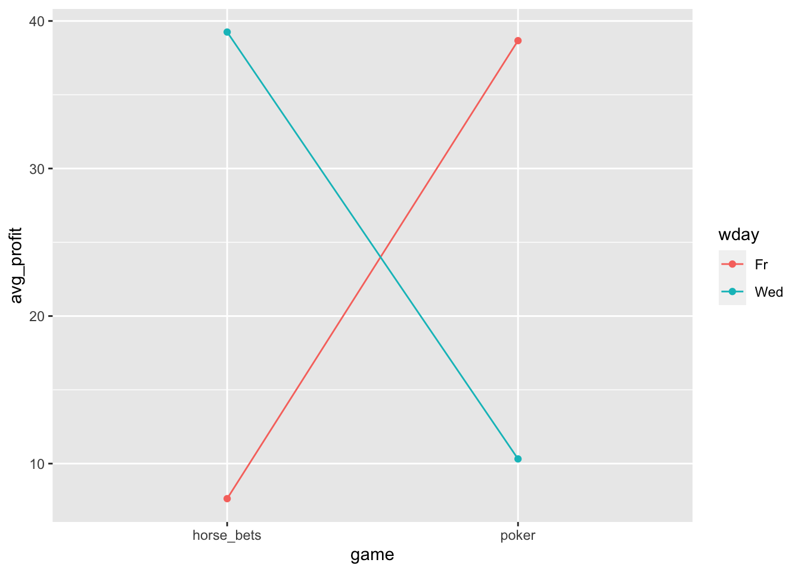
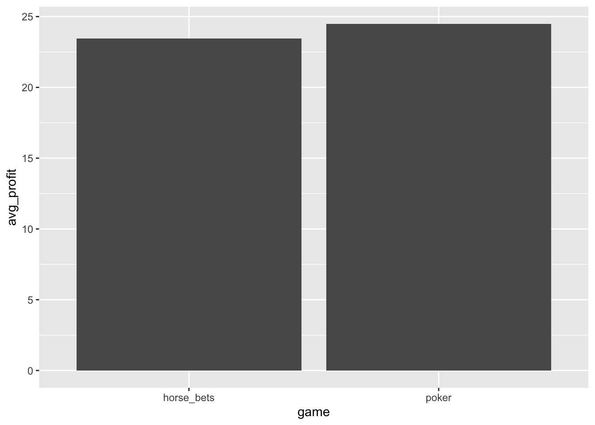
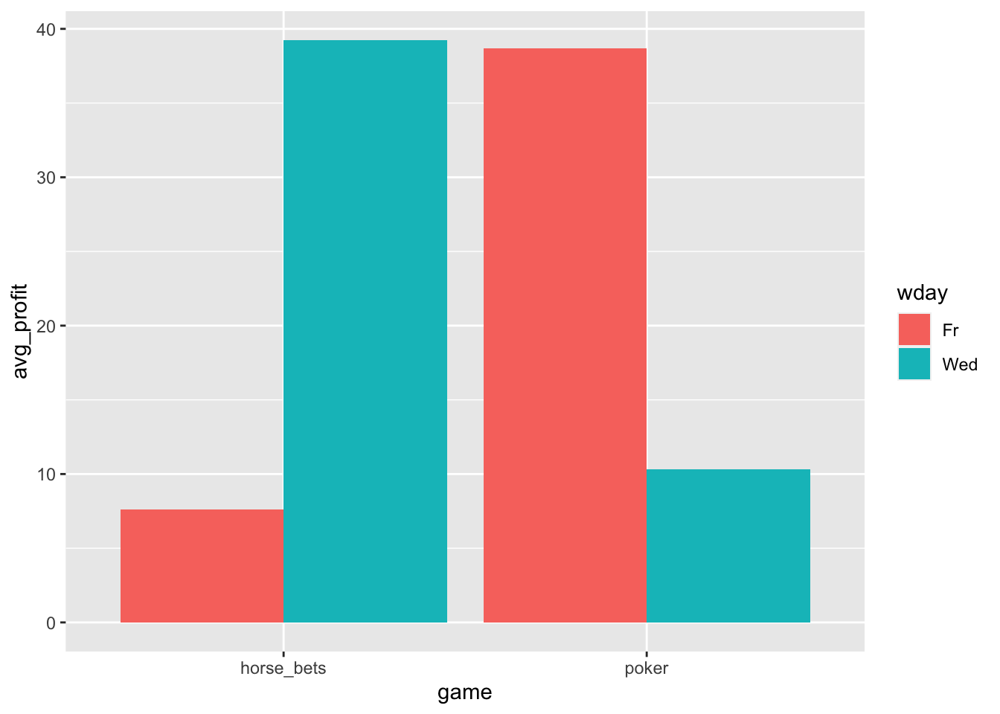

Chapter 3 Data Structures
3.1 Data Types in R
In R, value has a type:
| Data Type | Examples |
|---|---|
| Integer (Numeric): | …, -3, -2, -1, 0, +1, +2, +3, … |
| Double (Numeric): | most rational numbers; e.g., 1.0, 1.5, 20.0, pi |
| Character: | "a", "b", "word", "hello dear friend, ..." |
| Logical: | TRUE or FALSE (or: T or F ) |
| Factor: | Restricted, user-defined set of values, internally represented numerically (e.g., Gender {‘male’, ‘female’, ‘other’}) |
| Ordered factor: | Factor with an ordering (e.g., Starbucks coffee sizes {‘venti’ > ‘grande’ > ‘tall’}) |
3.2 Data Structures in R
All values in R are organized in data structures. Structures differ in their number of dimensions and in whether they allow mixed data types.
In this course, we will mainly use vectors and data frames.
| dimensions | types | ||
|---|---|---|---|
| Vector | 1-dimensional | one type | |
| Matrix | 2-dimensional | one type |  |
| Array | n-dimensional | one type |  |
| Data frame (or tibble) | 2-dimensional | mixed types |  |
| List | 1-dimensional | mixed types |  |
(Illustrations from Gaurav Tiwari’s article on medium here.)
- Let’s look at some examples
# create and print vectors, don't save
c(1,2, 1000)## [1] 1 2 1000c(1,2, 1000, pi)## [1] 1.000000 2.000000 1000.000000 3.1415931:3## [1] 1 2 3# create and print a data.frame
data.frame(1:3)## X1.3
## 1 1
## 2 2
## 3 33.3 Vectors
- Vectors are simply ordered lists of elements, where every element has the same type.
- They are useful for storing sets or sequences of numbers.
- Let’s create a simple vector with all integers from 1 to 8 and look at its contents.
vector_var <- c(1,2,3,4,5,6,7,8)
vector_var## [1] 1 2 3 4 5 6 7 8- There is even a more elegant ways to do that:
vector_var <- 1:8
vector_var## [1] 1 2 3 4 5 6 7 8- Now, let’s create a simple vector with integers between 1 and 8, going in steps of 2.
vector_var <- seq(1,8, by=2)
vector_var## [1] 1 3 5 7- Some useful vectors already exist in R.
letters## [1] "a" "b" "c" "d" "e" "f" "g" "h" "i" "j" "k" "l" "m" "n" "o" "p" "q" "r" "s"
## [20] "t" "u" "v" "w" "x" "y" "z"LETTERS## [1] "A" "B" "C" "D" "E" "F" "G" "H" "I" "J" "K" "L" "M" "N" "O" "P" "Q" "R" "S"
## [20] "T" "U" "V" "W" "X" "Y" "Z"- We can select specific elements of a vector by indexing it with
[].
# the first letter
letters[1]## [1] "a"# the 13-th letter
letters[13]## [1] "m"- Indices can be vectors too.
# both of them
letters[c(1,7)]## [1] "a" "g"- We can even take a whole ‘slice’ of a vector.
# both of them
letters[6:12]## [1] "f" "g" "h" "i" "j" "k" "l"- Indices can even be negative. A negative index \(-n\) means ‘everything’ except \(n\).
# both of them
letters[-1]## [1] "b" "c" "d" "e" "f" "g" "h" "i" "j" "k" "l" "m" "n" "o" "p" "q" "r" "s" "t"
## [20] "u" "v" "w" "x" "y" "z"- Vectors can be named.
digits <- c('one'=1, 'two'=2, 'three'=3, 'four'=4, 'five'=5, 'six'=6)- In this case, we can index by the name
digits[c('one', 'six')]## one six
## 1 6- Believe it or not, everything in R is actually a vector. For example
9is a vector with only one element, which is9.
9## [1] 9- This is why every output begins with
[1]. R tries to help you find numbers in printed vectors. Every time a vector is printed, it reminds you at which position in the vector we are. - The
[1]in the output below tells you that"a"is the first element, and the[20]tells you that"t"is the 20-th element.
letters # print a vector with all lower-case letters## [1] "a" "b" "c" "d" "e" "f" "g" "h" "i" "j" "k" "l" "m" "n" "o" "p" "q" "r" "s"
## [20] "t" "u" "v" "w" "x" "y" "z"3.3.1 What are vectors good for?
- Let’s put this knowledge to use.
- Here are two vectors representing the winnings from my recent gambling:
horse_bets_payout_tl <- c(100, -50, 1, 100, -10, -20, 250, -40, -30, 23, -23, 55, 14, 8, 24, -3)poker_payout_tl <- c(24, 5, -38.1, 12, 103, 15, 5, 187, 13, -23, -45, 36)- Let’s find out which game is more profitable.
- To get our average profit, we first need to compute the sum of a vector.
- Then, we will divide the sum by the length of the vector.
- First, let’s compute the sums of these vectors.
sum(horse_bets_payout_tl)## [1] 399sum(poker_payout_tl)## [1] 293.9- Now, we need to determine the length of these vectors:
length(horse_bets_payout_tl)## [1] 16length(poker_payout_tl)## [1] 12- Dividing the sum by the length would give us our average profit.
sum(horse_bets_payout_tl)/length(horse_bets_payout_tl)## [1] 24.9375sum(poker_payout_tl)/length(poker_payout_tl)## [1] 24.49167… so which game is more profitable?
It seems that betting is more profitable.
Next time, we can accomplish this calulation by calling the function
mean().
mean(horse_bets_payout_tl)## [1] 24.9375mean(poker_payout_tl)## [1] 24.49167Now, I forgot to mention that my bookie charges me 1.5 TL per bet on a horse, on average. The poker payouts correspond to the profits, though.
Luckily, we can just add numbers and vectors. Let’s just create two new vectors which contain the profits.
Let’s subtract 1.5 from elements of
horse_bets_payout_tland save the result ashorse_bets_profits_tl.As you see, this subtraction is applied to every element of the vector.
horse_bets_profits_tl <- horse_bets_payout_tl - 1.5
head(horse_bets_profits_tl)## [1] 98.5 -51.5 -0.5 98.5 -11.5 -21.5head(horse_bets_payout_tl)## [1] 100 -50 1 100 -10 -20- For poker, we don’t need to change anything. So, we assign the already existing
poker_payout_tlvector to another vector calledpoker_profits_tl.
poker_profits_tl <- poker_payout_tl- Let’s compare:
horse_bets_payout_tl## [1] 100 -50 1 100 -10 -20 250 -40 -30 23 -23 55 14 8 24 -3horse_bets_profits_tl## [1] 98.5 -51.5 -0.5 98.5 -11.5 -21.5 248.5 -41.5 -31.5 21.5 -24.5 53.5
## [13] 12.5 6.5 22.5 -4.5poker_payout_tl## [1] 24.0 5.0 -38.1 12.0 103.0 15.0 5.0 187.0 13.0 -23.0 -45.0 36.0poker_profits_tl## [1] 24.0 5.0 -38.1 12.0 103.0 15.0 5.0 187.0 13.0 -23.0 -45.0 36.0- Which game is more profitable now?
mean(horse_bets_profits_tl)## [1] 23.4375mean(poker_profits_tl)## [1] 24.491673.4 Data Frames
- What I forgot to mention is that I generally gamble on Wednesdays and Fridays. Maybe that matters?
- How can we associate this information with the profits vectors?
- One way is to represent it in two vectors containing days of the week. In that case, every \(i\)-th element in
poker_week_dayscorresponds to the \(i\)-th element inpoker_week_days.
# create two vectors with week days
horse_bets_week_days <- rep(c("Wed", "Fr"), 8)
poker_week_days <- rep(c("Wed", "Fr"), 6)But this is getting messy. We have to keep track of two pairs a vectors, and the relations between them. Let’s represent all poker-related information in one data structure, and all horse race-related information in another structure.
The best way to represent a pair of vectors where the \(i\)-th element in vector 1 corresponds to the \(i\)-th element in vector 2 is with data frames. We can create a new data frame with the function
data.frame().
df_horse_bets <-
data.frame(wday = horse_bets_week_days,
profit = horse_bets_profits_tl)df_poker <-
data.frame(wday = poker_week_days,
profit = poker_payout_tl)- Let’s take a look at what we’ve created.
df_horse_bets## wday profit
## 1 Wed 98.5
## 2 Fr -51.5
## 3 Wed -0.5
## 4 Fr 98.5
## 5 Wed -11.5
## 6 Fr -21.5
## 7 Wed 248.5
## 8 Fr -41.5
## 9 Wed -31.5
## 10 Fr 21.5
## 11 Wed -24.5
## 12 Fr 53.5
## 13 Wed 12.5
## 14 Fr 6.5
## 15 Wed 22.5
## 16 Fr -4.5Wow. That’s a rather long output …
Generally, it’s sufficient to see the first couple of rows of a
data.frameto get a sense of what it contains.We’ll use the function
head(), which takes adata.frameand a number \(n\), and outputs the first \(n\) lines.
# let's see the first two rows of the data frame called df_horse_bets
head(df_horse_bets, 2) ## wday profit
## 1 Wed 98.5
## 2 Fr -51.5- An alternative is
View(), which shows you the entiredata.framewithin a new tab in the RStudio GUI.
View(df_poker)Turning back to our gambling example, we still have two objects, which really belong together.
Let’s merge them into one long data frame.
The function
rbind()takes two data frames as its arguments, and returns a single concatenated data frame, where all the rows of the first data frame are on top, and all the rows of the second data frame are at the bottom.
df_gambling <- rbind(df_horse_bets, df_poker)- Unfortunately, now, we don’t have any information on which profits are from which game.
head(df_gambling)## wday profit
## 1 Wed 98.5
## 2 Fr -51.5
## 3 Wed -0.5
## 4 Fr 98.5
## 5 Wed -11.5
## 6 Fr -21.5- Let’s fix this problem by enriching both data frames with this information.
- We can assign to new (or old) columns with our assignment operator
<-. - When we assign a value to a specific column, R puts the specified value into every row of the column of the given data frame.
- What the following code says is “Create a new column named
gamein the data frame nameddf_horse_betsand fill the column with the string horse_bets.”
df_horse_bets$game <- "horse_bets"
df_poker$game <- "poker"- Now, let’s bind them together again. (This overwrites the old data frame called
df_gambling, which we created previously.)
df_gambling <- rbind(df_horse_bets, df_poker)
head(df_gambling)## wday profit game
## 1 Wed 98.5 horse_bets
## 2 Fr -51.5 horse_bets
## 3 Wed -0.5 horse_bets
## 4 Fr 98.5 horse_bets
## 5 Wed -11.5 horse_bets
## 6 Fr -21.5 horse_bets3.5 Working with data frames
- Now, we can do very cool things very easily.
- But we’ll need two packages for that:
dplyr, andmagrittr.
# load the two packages
library(magrittr) # for '%>%'##
## Attaching package: 'magrittr'## The following object is masked from 'package:purrr':
##
## set_names## The following object is masked from 'package:tidyr':
##
## extractlibrary(dplyr) # for group_by() and summarize()Now, we can ‘aggregate’ data (= “combine data from several measurements by replacing it by summary statistics”).
Let’s compute the average profit by
game.Within the
summarize()function, we specify new columns.In this case,
avg_profitis the name of our column and its content is mean of the profit column.Keep in mind that
summarize()function is applied at the group level.
df_gambling %>%
group_by(game) %>%
summarize(avg_profit = mean(profit))## # A tibble: 2 × 2
## game avg_profit
## <chr> <dbl>
## 1 horse_bets 23.4
## 2 poker 24.5- We can also aggregate over several grouping variables at the same time, like
gameandwday.
df_gambling %>%
group_by(game, wday) %>%
summarize(avg_profit = mean(profit))## `summarise()` has grouped output by 'game'. You can override using the `.groups`
## argument.## # A tibble: 4 × 3
## # Groups: game [2]
## game wday avg_profit
## <chr> <chr> <dbl>
## 1 horse_bets Fr 7.62
## 2 horse_bets Wed 39.2
## 3 poker Fr 38.7
## 4 poker Wed 10.3- … and we can do so in various ways. Here we compute the proportion of wins.
df_gambling %>%
group_by(game, wday) %>%
summarize(avg_proportion_wins = mean(profit>0) )## `summarise()` has grouped output by 'game'. You can override using the `.groups`
## argument.## # A tibble: 4 × 3
## # Groups: game [2]
## game wday avg_proportion_wins
## <chr> <chr> <dbl>
## 1 horse_bets Fr 0.5
## 2 horse_bets Wed 0.5
## 3 poker Fr 0.833
## 4 poker Wed 0.667- Now, we can also plot the results.
- But we’ll need to save the summary statistics first.
profits_by_game <-
df_gambling %>%
group_by(game) %>%
summarize(avg_profit = mean(profit))profits_by_game_and_wday <-
df_gambling %>%
group_by(game, wday) %>%
summarize(avg_profit = mean(profit))## `summarise()` has grouped output by 'game'. You can override using the `.groups`
## argument.- We will also need yet another package (for plotting):
ggplot2.
library(ggplot2)- After loading the package ggplot2, we can create plots with the function
ggplot(). We will be going over the details in the upcoming chapters.
ggplot(profits_by_game, aes(game, avg_profit)) + geom_point()
- We may also want lines that connect the points.
library(ggplot2)
ggplot(profits_by_game_and_wday, aes(game, avg_profit, color = wday, group = wday)) + geom_point() + geom_line()
- Or, we may want to have a bar graph.
library(ggplot2)
ggplot(profits_by_game, aes(game, avg_profit)) + geom_bar(stat = "identity")
library(ggplot2)
ggplot(profits_by_game_and_wday, aes(game, avg_profit, fill = wday)) + geom_bar(stat = "identity", position = "dodge")
3.6 Functions in this section
data.frame(a = x, b = y, ...)
Create a data frame from several vectors. The vectors can be different types.
xA vector with \(n\) elements.yAnother vector with \(n\) elements....More vectors can be provided.
View(x)
Display a data frame, or another structure.
head(df, n=6)
Show the first \(n\) rows in the data frame df.
dfData frame from which to display the first \(n\) rows.nThe number of rows to display. The default value for \(n\) is 6.
sum(x)
Compute the sum of a vector.
length(x)
Return the length of a vector.
mean(x)
Compute the mean of a vector.
rep(x, n)
Repeat the contents of a vector \(n\) times
xThe vector to be repeated.nHow many times to repeat the vector x.
seq(from, to, by)
Create a sequence of integers from from to to in steps of by.
fromThe integer to start from.toThe integer to stop after.bySize of steps to take. (Iffrom\(>\)to,byneeds to be negative.)
rbind(df1, df2)
Append df1 to df2 and return the resulting data frame. Both data frames need to have the same number of columns with the same names.
df1First data frame.df2Second data frame.